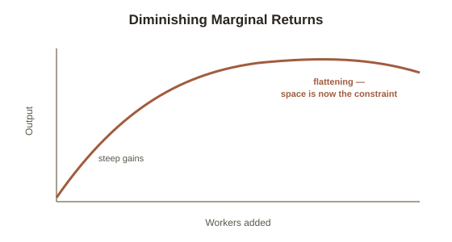

Chapter 4: Diminishing Marginal Returns
Chapter 3's breakeven model quietly assumed every additional unit costs the same as the last one to produce. Chapter 4 is about the case where that assumption breaks down — a pattern so common and so counterintuitive that most people fight it in practice long after they'd agree with it in theory.
The kitchen example
Diminishing marginal returns describes what happens when one input keeps increasing while others stay fixed: each additional unit of the growing input adds less extra output than the one before it, eventually. A kitchen with one cook and fixed counter space, ovens, and prep stations produces some amount of food per hour. Adding a second cook roughly doubles output — plenty of unused space and equipment to work with. Adding a third and fourth cook still helps, but by less each time, since counter space and oven access are now being shared and occasionally waited on. Add an eighth cook to a kitchen built for two, and the extra person may barely help at all, or actively slow things down through crowding and coordination overhead — the same additional unit of labor, now producing far less than it did earlier, because every other input (space, equipment) stayed fixed while labor kept growing.

Why this applies far beyond staffing a kitchen
The same pattern governs a huge range of real decisions once you're looking for the shape: study hours added to an already-long study session produce less learning per additional hour past a certain point, as fatigue and attention (the fixed inputs, in this case) become the binding constraint rather than time itself. Marketing spend produces diminishing extra customers per additional dollar once the most responsive segment of the audience has already been reached and each new dollar is chasing progressively less interested people. A single additional hour of overtime on an already-long week often produces less useful output than the same hour would on a fresh day, because attention and energy — not time — are the actually-scarce input by that point.
The practical skill: recognizing the inflection point
The useful application isn't "diminishing returns are bad" — early returns to additional input are often strongly positive, which is exactly why adding the input made sense in the first place. The useful skill is noticing when you've crossed from the steep part of the curve to the flat part, since that's the point where the same additional unit of effort, staff, or spending stops being the highest-value place to put the next increment of that resource — and Chapter 2's marginal rule applies here directly: once the marginal output of one more unit of an input drops below what that unit costs, the right move is redirecting it elsewhere, not adding more of the same thing out of momentum.
Try this
Ideas for noticing or testing this in your own life.
- Think of a recent case where "just add more" — more hours, more staff, more budget — stopped actually helping much: what was the fixed input that became the real bottleneck once the growing input passed a certain point?
Worth pulling on?
A few loose threads from this chapter — if any of these genuinely grab you, that's a good sign of where to go next.
- The opposite pattern also exists: producing more can sometimes get cheaper per unit, not more expensive — the mirror image of this chapter. → Picked up directly in Chapter 5.